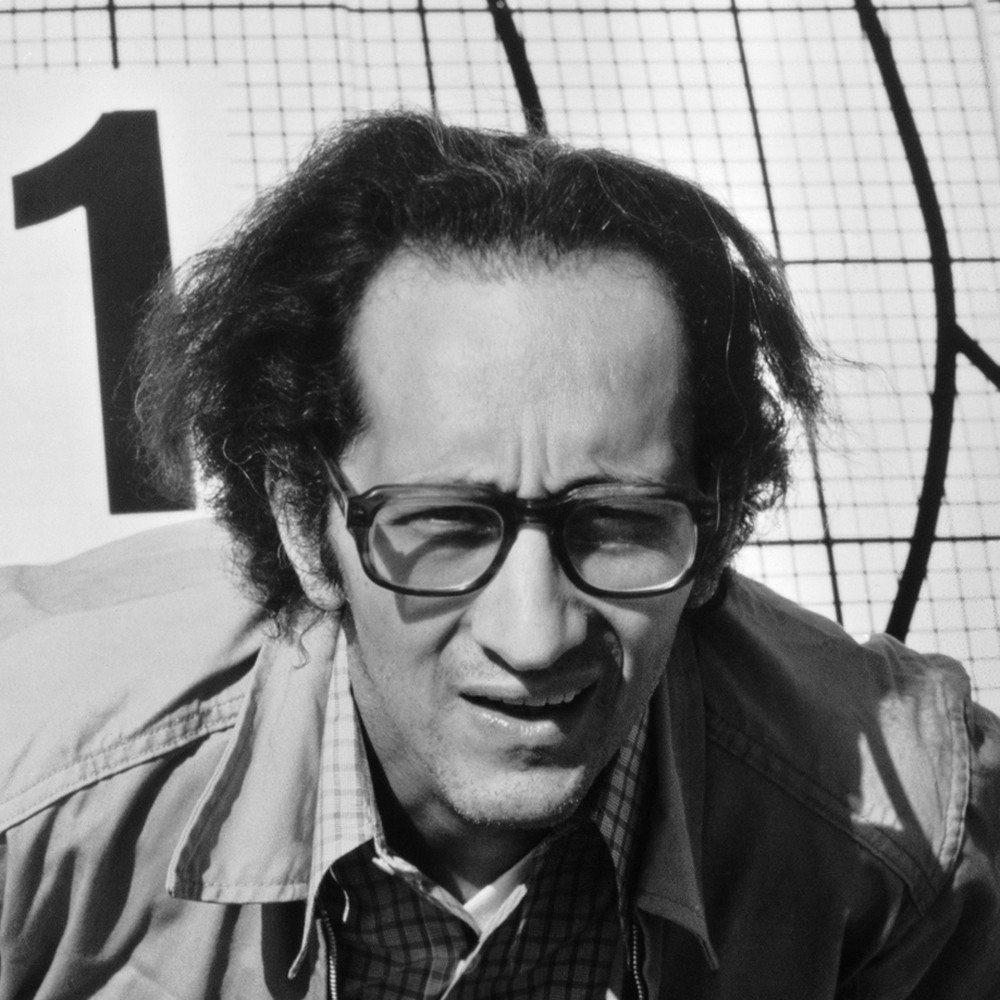

"About Frank" !
Art
Frank Stella, in full Frank Philip Stella, (born May 12, 1936, Malden, Massachusetts, U.S.), American painter who began as a leading figure in the Minimalist art movement and later became known for his irregularly shaped works and large-scale multimedia reliefs.Frank Stella (b. 1936) is one of the most important living American artists. This retrospective is the most comprehensive presentation of Stella’s career to date, showcasing his prolific output from the mid-1950s to the present through approximately 100 works, including paintings, reliefs, maquettes, sculptures, and drawings.This exhibition features Stella’s best-known works alongside rarely seen examples drawn from collections around the world.

Before
Living Artist
After
Frank Stella 1967 Silo
Frank Stella 1967 For Web
Frank Stella 1967 Silo